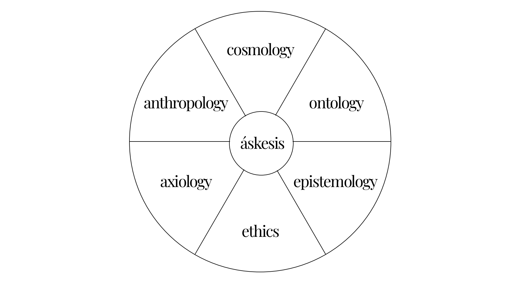

PRACTICAL ekoPHILSOPHY
is a deep leverage for healthy people and a healthy planet.
WHAT WE DO
The challenges of our times – that is climate change, species extinction, increasing rates of depression, post-truth rivalries, as well as an increasing divide within society – have one common denominator: they are a reflection of an inner, philosophical health crisis.
We tailor philosophical workouts to your ability, ensuring you’re less foolish today and undeniably wiser tomorrow. It’s our commitment to you and the planet.
WHY PHILOSOPHY?
The conceptual and existential problems that our times pose are precisely those that have always been at the heart of humanistic inquiry: What does it mean to be human? What does it mean to live well? What is truth? What is good? These questions have no logical or empirical answers. They cannot be graphed or quantified. They are philosophical problems par excellence.
Mainstream approaches to systems change that focus on “outer transformation” – such as technologies, (organisational) policies, or infrastructurces, have their limitations because they often ignore the deeper philosophical underpinnings of the problems. Scientists from various disciplines therefore increasingly emphasize that an exclusively outer transformation is insufficient, and that an inner transformation of our philosophies is necessary. To do that, we can built on practical philosophy.
Practical philosophy has always been concerned with how we can train our worldview in a practical and real-life way. The philosophy that we often find in universities, which deals primarily with abstract ideas, is only a part of what philosophy actually was in ancient times, which was particularly about cultivating and practicing a worldview. Unlike medicine, law, or science, which provide concrete answers, practical philosophy encourages us to grapple with the unknown and to question our own assumptions. It brings to the centre the cultivation of individual and collective virtues – which are enduring and learned-by-doing capacities that emerge from experience, habituation and reflection – for individual, societal and environmental regeneration.
OUR APPROACH
Philosophies are not equally helpful. We believe that a good philosophy is ecological at its core. Meaning it’s relational, while acknowledging individuality, and can continue to evolve throughout our lifespan. This evolution has a clear direction: increasing complexity, expansion, inclusiveness, objectivity, towards an ekophilosophy.
Our approach is backed by science, but doesn’t stop there. There is so much valuable knowledge out there that has been disregarded, such as indigenous knowledge systems, but also tacit and embodied knowledge that cannot easily be measured and quantified. We try to speak to the head, heart and hand and believe that left hemispheric thinking (a focus on the parts) needs to be balanced with right hemispheric sensing (a defocus to the whole).
STAY IN TOUCH
Join Rewilding Philosophy, our newsletter about ecophilosophical health for our times with weekly essays, curated links, life advice and slivers of sanity.
stay in touch